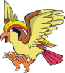
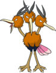

Nome: Falkner
Insígnia: Zephyr
Cidade: Violet
Biografia:
Os observadores mais atentos dos céus da cidade de Violet com certeza já viram um misterioso vulto, que sobrevoa atento a tudo o que ocorre abaixo. Não, não se trata de um pokémon, mas de Falkner em seu Pidgeot, o líder do ginásio local, em sua patrulha para manter a lei e a ordem. Não é de fazer amizades, prefere batalhar com os treinadores. Adora sentir o vento quando voa em seu Pidgeot.
Tendo herdado o ginásio de voadores de seu pai – bem como o imenso número de discípulos, Falkner orgulha-se da tradição de sua família, por ser descendente direto do primeiro líder de Violet. Mas esse orgulho todo lhe rendeu uma certa arrogância: não é difícil vê-lo subestimando seus oponentes. Cuidado! Ele tem verdadeiras crises de ira ao ouvir que seus pássaros podem cair com um simples raio do trovão.
Pokémon:

